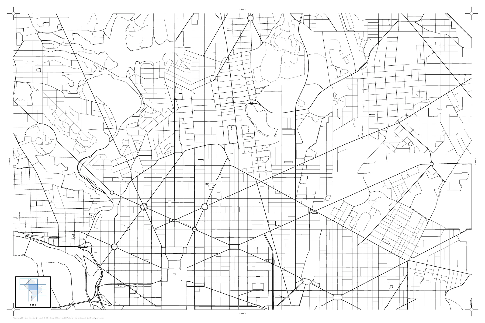
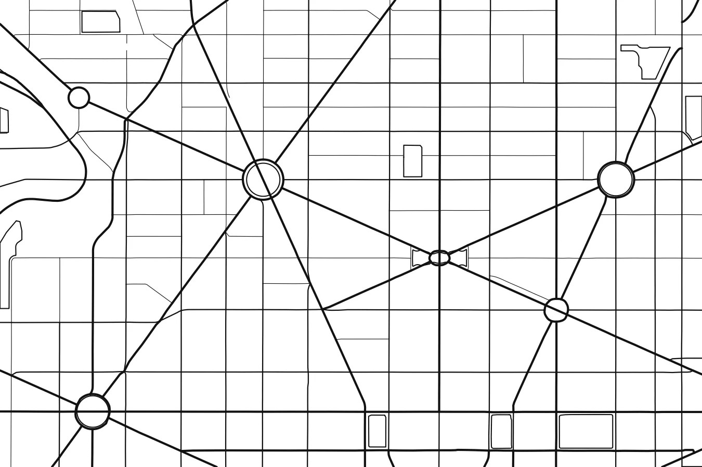
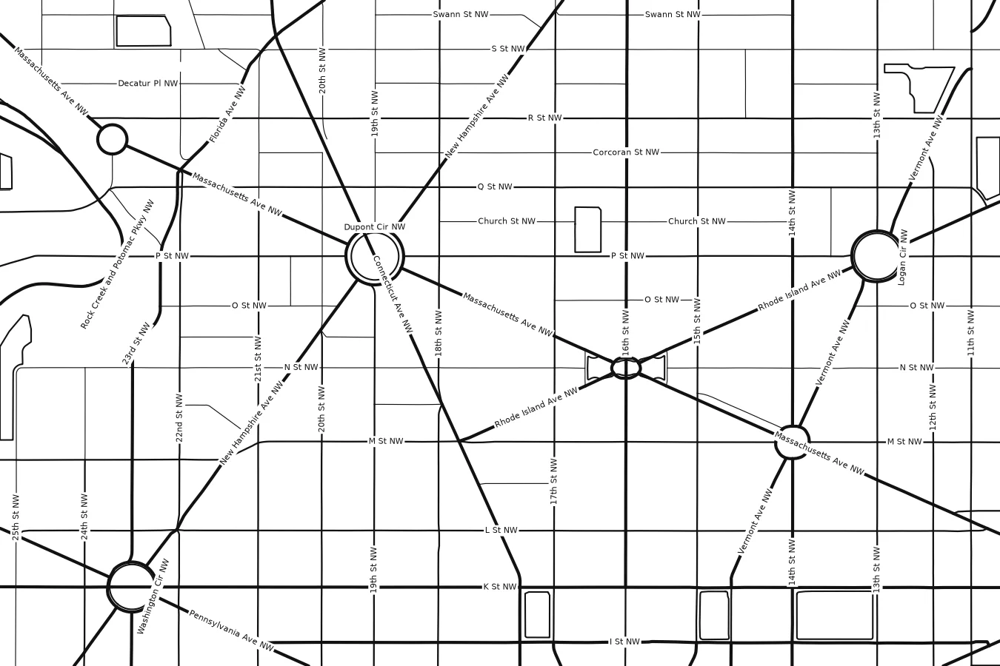
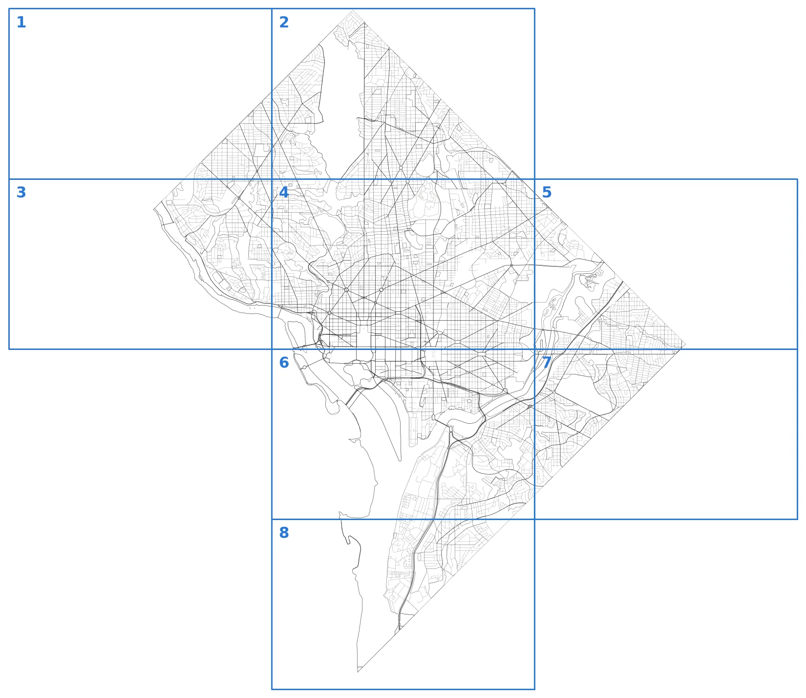

Washington, DC street map for hand-labeling and watercolor
Sample sheet 4 of 8, made from real data at true scale. Open the PDF and zoom in: every block is there.



At true print size


How the city is split

- 8 sheets of 36 × 24 in, all at one scale (1:10,433), so they hang together as one true map.
- The main cut runs along the north edge of the Mall, not through downtown blocks.
- DC is a diamond, so the corner sheets are partly outside the city. They carry the title, compass, scale bar and credits.
- Every sheet: 1 in blank margin, registration marks, arrows to the neighboring sheets, "4 of 8" and a small overview map.
- Heavier lines for the state avenues and main arteries, thin lines for neighborhood streets. Rivers, the Mall, parks and cemeteries are outlined and empty inside.
Streets: DC Open Data (DDOT street centerlines). Parks, water and landmark outlines: © OpenStreetMap contributors.